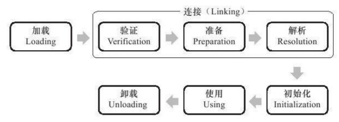

虚拟机类加载机制
虚拟机类加载机制
虚拟机把描述类的数据加载到内存，并对数据进行校验、转换解析和初始化，最终形成可以被虚拟机直接使用的Java类型，这就是虚拟机的类加载机制。
Java语言中，类型的加载、连接和初始化都是在程序运行期间完成，虽然类加载时稍微增加性能开销，但提供了高度灵活性，其它语音是在编译时进行连接工作。
1、面向接口的程序，可以等到运行时再指定其实际的实现类
2、可以使用Java预定义的或自定义的类加载器，在程序运行时从其它地方（含二进制流）加载文件
类加载的时机
类从加载到卸载的整个生命周期

有且只有5种情况必须对类进行初始化（如果类没有初始化）
- 遇到new、getstatic、putstatic或invokestatic这个四个指令时
- new：实例化对象
- getstatic：读取一个类的静态字段（被final修饰，已在编译期把结果放入常量池的静态字段除外）
- putstatic：设置一个类的静态字段
- invokestatic：调用一个类的静态方法
- 使用java.lang.reflect包的方法对类进行反射调用时
- 当初始化一个类，如果发现父类还没有初始化时，先触发父类的初始化
- 接口的初始化和类的初始化，只是在这条规则上不同
- 初始化一个类时，不会先初始化它所实现的接口
- 初始化一个接口时，不会先初始化它的父接口
- 接口的初始化和类的初始化，只是在这条规则上不同
- 当虚拟机启动时，用户需要指定一个要执行的主类，虚拟机会先初始化这个主类
- 当JDK1.7的动态语言支持时，如果一个java.lang.invoke.MethodHandle实例最后的解析结果是REF_getStatic、REF_putStatic、REF_invokeStatic的方法句柄，并且这个方法句柄对所偶的类没有进行初始化
不会触发初始化的场景
1、通过子类引用父类的静态字段，不会导致子类初始化：虽然也是读一个类的静态字段，但这个静态字段是属于父类而非子类
class SuperClass {
static {
System.out.println("SuperClass init ");
}
public static int value = 123;
}
class SubClass extends SuperClass {
static {
System.out.println("SubClass init ");
}
}
public class Test {
public static void main(String[] args) {
System.out.println(SubClass.value);
}
}
2、通过数组定义类引用类，不会触发此类的初始化
public class Test {
public static void main(String[] args) {
SuperClass[] sca = new SuperClass[10];
}
}
3、常量在编译阶段会存入调用类的常量池中，本质上并没有直接引用到定义常量的类，因此不会触发定义常量的类的初始化。编译通过常量传播优化，已将常量的值，存储到了Test类的常量池中，实际上这时两个类以及不存在任何联系了。这也说明了，通过替换Constants.class文件不会有效果。
public class Test {
public static void main(String[] args) {
System.out.print(SubClass.HELLOWORLD);
}
}
类加载的过程
- 通过一个类的全限定名来获取定义此类的二进制字节流
- 将这个字节流所代表的静态存储结构转化为方法区的运行时数据结构
- 在内存中生成一个代表这个类的java.lang.Class对象，作为方法区这个类的分钟数据的访问入口
类加载器
ClassLoader类加载器
主要作用是将class文件加载到JVM虚拟机中（JVM启动时并不是一次性加载所有的类，而是根据需要动态的去加载）。
- 隐式加载：由JVM自动加载，例如我们在类中继承或引用某个类的时候，JVM在解析当前这个类是，发现引用的类不在内存中，就会自动将这些类加载到内存中。
- 显示加载：代码中通过Class.forName()，this.getClass.getClassLoader.loadClass()、自定义类加载器中的findClass方法等 。
JVM自带类加载器
- 1、BootStrap ClassLoader
- 主要加载
%JRE_HOME%\lib下的包 - 可通过
-Xbootclasspath设置额外的路径
- 主要加载
- 2、Extention ClassLoader
- 主要加载
%JRE_HOME%\lib\ext目录下的jar包 - 可通过
-Djava.ext.dirs设置，但会照成ext目录下面的jar无法加载
- 主要加载
- 3、App CLassLoader
- 主要加载当前应用
classpath目录下的类 - 可通过
-classpath或-cp设置
- 主要加载当前应用
自定义类加载器
继承ClassLoader，重新findClass方法，调用definedClass方法。
public class MyClassLoader extends ClassLoader {
private String path;
private String classLoaderName;
public MyClassLoader(String path, String classLoaderName) {
this.path = path;
this.classLoaderName = classLoaderName;
}
@Override
protected Class<?> findClass(String name) throws ClassNotFoundException {
try {
byte[] b = loadClassData(name);
return defineClass(name, b, 0, b.length);
} catch (IOException e) {
e.printStackTrace();
}
return null;
}
private byte[] loadClassData(String name) throws IOException {
name = path + name + ".class";
InputStream is = null;
ByteArrayOutputStream outputStream = null;
try {
is = new FileInputStream(new File(name));
outputStream = new ByteArrayOutputStream();
int i = 0;
while ((i = is.read()) != -1) {
outputStream.write(i);
}
} catch (Exception e) {
e.printStackTrace();
} finally {
if (outputStream != null) {
outputStream.close();
}
if (is != null) {
is.close();
}
}
return outputStream.toByteArray();
}
}
测试
public class ClassLoaderChecker {
public static void main(String[] args) throws ClassNotFoundException, IllegalAccessException, InstantiationException {
MyClassLoader myClassLoader = new MyClassLoader("path", "MyClassLoader");
Class c = myClassLoader.loadClass("Hello");
System.out.println("ClassLoader:" + c.getClassLoader());
Object instance = c.newInstance();
}
}
类加载双亲委托机制
从自定义类加载器往上一层一层的查找，如果查找不到就抛出ClassNotFoundException一层，如果查找到就加载。